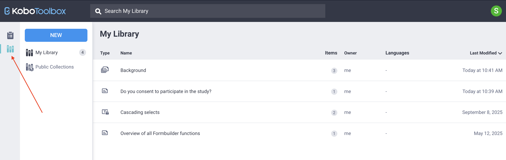
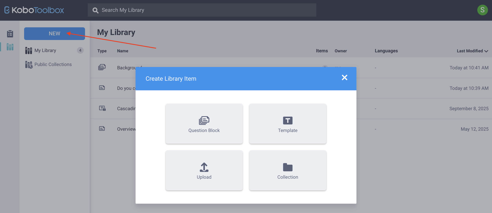
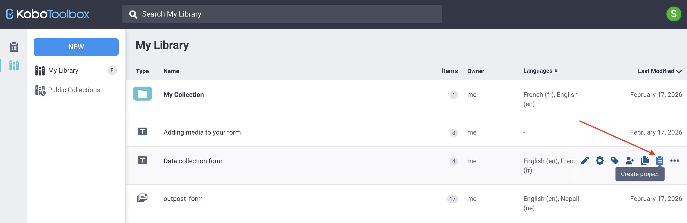
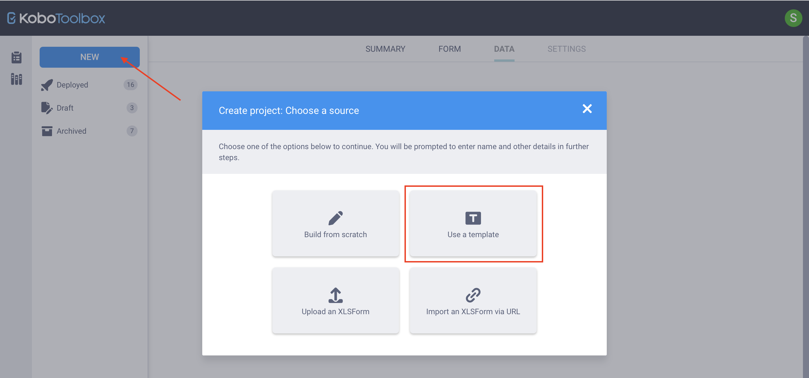
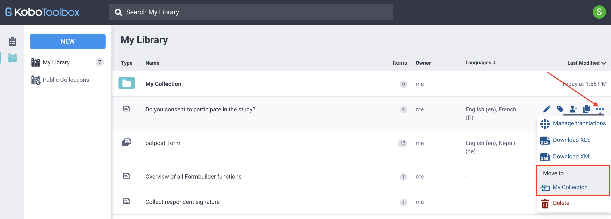

Busca en nuestra documentación, explora nuestros recursos y visita nuestro Foro de la Comunidad para obtener información más detallada
Última actualización: 25 Mar 2026
La biblioteca de preguntas de KoboToolbox te permite guardar, reutilizar y compartir preguntas en múltiples formularios. En lugar de recrear preguntas y opciones de uso frecuente, puedes almacenarlas en la biblioteca e insertarlas rápidamente en nuevos formularios.
La biblioteca de preguntas puede almacenar preguntas individuales, bloques de preguntas y plantillas de formularios completos. También puedes organizar tu contenido usando colecciones para agrupar elementos relacionados por proyecto, tema, país u organización.
Usar la biblioteca de preguntas ayuda a mantener la coherencia entre proyectos, simplifica el proceso de diseño de formularios y facilita compartir contenido estandarizado con otros miembros de tu equipo. Puedes acceder a la biblioteca de preguntas desde el menú lateral izquierdo del sitio web de KoboToolbox.

Nota: La biblioteca de preguntas de KoboToolbox puede contener contenido público y privado. Este artículo se centra en Mi biblioteca, donde puedes guardar, organizar, reutilizar y compartir tus propias preguntas, bloques de preguntas y plantillas de formularios. Para obtener más información sobre cómo hacer público el contenido de la biblioteca, consulta Colecciones públicas en la biblioteca de KoboToolbox.
Este artículo cubre los siguientes temas:
Agregar preguntas a la biblioteca de preguntas y usarlas en tus formularios
Agregar plantillas a tu biblioteca de preguntas y crear formularios a partir de plantillas
Trabajar con colecciones para organizar tu contenido
Al crear un formulario en el editor de formularios de KoboToolbox (Formbuilder), puedes guardar cualquier pregunta en tu biblioteca de preguntas haciendo clic en Agregar pregunta a la biblioteca en el menú lateral derecho de la pregunta.

Este método conserva todos los componentes de tu pregunta, incluidas las opciones de respuesta, las traducciones, las opciones de pregunta, la lógica de omisión y los criterios de validación.
Nota: Al agregar una pregunta a tu biblioteca, se guarda una copia de la pregunta, y los cambios realizados en la pregunta original no afectan a la versión guardada.
También puedes agregar un grupo de múltiples preguntas a la biblioteca de preguntas haciendo clic en Agregar pregunta a la biblioteca a nivel del grupo. El grupo se guarda como un bloque de preguntas.

También puedes crear preguntas de biblioteca directamente desde la biblioteca de preguntas:
Haz clic en Biblioteca en el menú lateral izquierdo para abrir la biblioteca.
Haz clic en NUEVO en la esquina superior izquierda.
Selecciona Bloque de preguntas. Esto abre el Formbuilder de KoboToolbox, donde puedes agregar la pregunta o el grupo de preguntas que deseas guardar.
Haz clic en Crear en la esquina superior derecha para guardar el bloque de preguntas en tu biblioteca.

Puedes cargar preguntas o bloques de preguntas desde un XLSForm haciendo clic en Cargar en Crear elemento en la biblioteca y cargando un XLSForm.
En la vista Mi biblioteca, puedes ver todas las preguntas y bloques de preguntas guardados. Para cada elemento, puedes ver detalles como el número de preguntas incluidas, el propietario, los idiomas disponibles y la fecha de última modificación.
Para cada elemento guardado, puedes pasar el cursor sobre él para:
Editar la(s) pregunta(s) en el Formbuilder
Agregar etiquetas para ayudar a organizar y categorizar elementos y facilitar la búsqueda
Compartir con otros usuarios, asignando permisos para ver, editar o gestionar el elemento
Clonar para crear un duplicado que puedes modificar de forma independiente
Hacer clic en Otras acciones para gestionar las traducciones, descargar el elemento como XLS o XML, o eliminarlo

También puedes hacer clic en cualquier elemento guardado para ver sus detalles completos, incluidas todas las preguntas contenidas en un bloque de preguntas.
Una vez que hayas agregado preguntas a tu biblioteca, puedes usarlas en futuros formularios. Para usar preguntas de la biblioteca en tu formulario:
Abre tu formulario en el editor de formularios de KoboToolbox (Formbuilder).
Haz clic en Agregar desde la biblioteca en la esquina superior derecha.
Selecciona la pregunta o el bloque de preguntas que deseas agregar y arrástralo y suéltalo en la ubicación deseada dentro de tu formulario.
Si tu biblioteca de preguntas contiene muchos elementos, puedes usar la función Buscar para localizar rápidamente la pregunta o el bloque que necesitas.

Nota: Cuando agregas una pregunta de tu biblioteca de preguntas a un formulario, los cambios que realices en el formulario no afectarán a la versión original guardada en la biblioteca.
Además de guardar preguntas individuales o bloques de preguntas, puedes crear plantillas de formularios completos que se pueden convertir en proyectos de KoboToolbox. Las plantillas son útiles para estandarizar formularios completos que se pueden reutilizar entre equipos, proyectos o países.
Nota: Un bloque de preguntas es un grupo de preguntas que se puede insertar en cualquier parte de un formulario, mientras que una plantilla contiene un formulario completo que puede convertirse en un proyecto.
Puedes crear una plantilla desde tu biblioteca de preguntas o desde un formulario de KoboToolbox existente.
Desde tu biblioteca de preguntas, puedes:
Hacer clic en NUEVO > Plantilla. Se te llevará al Formbuilder para diseñar el formulario después de ingresar los detalles de la plantilla.
Hacer clic en NUEVO > Cargar, cargar un XLSForm y seleccionar Cargar como plantilla.

Nota: Si usas XLSForm, puedes crear plantillas bloqueadas que impidan que otros usuarios editen partes específicas del formulario. Para obtener más información, consulta Bloquear cuestionarios para la biblioteca usando XLSForms.
Para crear una plantilla a partir de un formulario de KoboToolbox existente:
Abre la página FORMULARIO del proyecto.
Haz clic en Otras acciones en la esquina superior derecha.
Selecciona Crear plantilla.

Desde la página Mi biblioteca, puedes gestionar las plantillas de la misma manera que las preguntas o los bloques de preguntas. Puedes compartirlas con otros usuarios, agregar etiquetas, editar detalles o eliminarlas.
Puedes usar una plantilla para crear un nuevo proyecto de formulario desde tu biblioteca de preguntas o desde tu Página de proyectos.
Desde la biblioteca de preguntas:
Pasa el cursor sobre la plantilla y haz clic en Crear proyecto a la derecha.
Ingresa un nombre para el nuevo proyecto.

Desde la Página de proyectos:
Haz clic en NUEVO y selecciona Usar una plantilla.
Elige una plantilla guardada y haz clic en Siguiente.
Ingresa los detalles del proyecto y haz clic en Crear proyecto.
En ambos casos, se creará un nuevo proyecto de KoboToolbox que puedes editar e implementar.

Nota: Editar un proyecto creado a partir de una plantilla no modifica la plantilla original.
Una colección es un grupo de preguntas, bloques de preguntas y/o plantillas organizados juntos porque están relacionados con el mismo proyecto, tema, país u otro contexto compartido. Las colecciones te ayudan a estructurar y gestionar el contenido reutilizable en tu biblioteca de preguntas.
Para crear una colección:
Desde tu biblioteca de preguntas, haz clic en NUEVO y selecciona Colección.
Ingresa un nombre y, si lo deseas, agrega una breve descripción, organización, sector principal y país. Estos campos son opcionales.
Agrega etiquetas para ayudar a categorizar y organizar tu colección.
Haz clic en Crear.

Nota: Si deseas importar un gran número de preguntas o bloques de preguntas a tu biblioteca como una sola colección, puedes hacerlo usando un XLSForm. Para obtener más información, consulta Importar una colección con XLSForm.
Después de crear la colección, se te llevará a la página principal de la colección, que mostrará el mensaje: «No hay recursos para mostrar.»
Puedes agregar preguntas, bloques de preguntas o plantillas a una colección de varias maneras:
Desde la página de la colección:
Haz clic en NUEVO > Bloque de preguntas para crear una nueva pregunta o bloque en el Formbuilder y guardarlo en la colección.
Haz clic en NUEVO > Plantilla para crear una plantilla y guardarla en la colección.
Desde Mi biblioteca, pasa el cursor sobre un elemento existente, haz clic en Otras acciones y elige el nombre de tu colección en Mover a.

Nota: No puedes crear colecciones anidadas. Si creas una colección dentro de otra colección, se guardará como una colección separada.
Para eliminar un elemento de una colección, haz clic en Otras acciones en la fila del elemento y selecciona Eliminar de la recolección.
Puedes gestionar tu colección desde la página Mi biblioteca pasando el cursor sobre ella y seleccionando las opciones disponibles para modificar sus detalles, agregar etiquetas, compartirla con otros usuarios o eliminarla. También puedes realizar estas acciones directamente desde la página de la colección.
Nota: Eliminar una colección elimina permanentemente todos los elementos que contiene.
Para hacer pública una colección, abre la colección y haz clic en el botón Publicar en la esquina superior derecha. Ten en cuenta que los campos nombre, organización y sector deben estar completados antes de que una colección pueda hacerse pública.
Para obtener más información sobre las colecciones públicas, consulta Colecciones públicas en la biblioteca KoboToolbox.
¿Encontraste lo que buscabas? ¿Te ha parecido clara la traducción? ¿Faltaba algo?
¡Comparte tus comentarios para ayudarnos a mejorar este artículo!